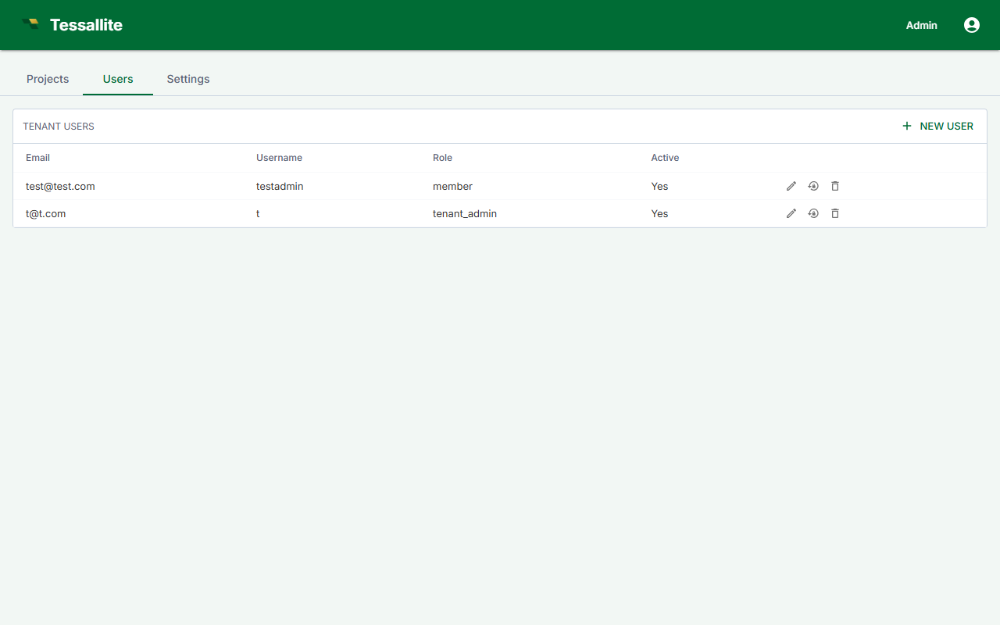

Manage Users

What this covers
This article covers all user management tasks available to a Tenant Admin: viewing the user list, adding new users, removing users, resetting passwords, and reading user details.
Navigating to the user list
- Sign in to your workspace.
- In the workspace sidebar, click Admin.
- Click the Users tab.
The Users tab displays all users in the workspace with their email address, role, last-active timestamp, and project memberships.
Adding a user
Tessallite does not send invitation emails. You create each account directly, set its first password, and pass the credentials to the person out of band (or let them sign in through single sign-on -- see below).
- On the Users tab, click New user.
- Enter a username and the user's email address.
- Type an initial password. It must meet the complexity rule shown under the field (see Password rules below); the Save button stays greyed out until it does.
- Select the role to assign: Tenant Admin, Modeller, Analyst, or
model_technical. - Click Save, then give the email address and password to the new user so they can sign in. They can change their password later.
The model_technical choice is a special audience role rather than a permission level: it pins the user to the technical persona for column-level security and data tags, and grants no project access on its own. Pick it only for users who should see technical column detail; they will still need a project-level Viewer or Modeller binding to open a project. See Manage roles and Configure personas.
Single sign-on users
If your workspace uses single sign-on, you do not add these users by hand. The first time someone signs in through the identity provider, Tessallite creates their account automatically (just-in-time provisioning) and assigns the role your SSO mapping specifies. Their password is owned by the identity provider, so the Reset Password action does not apply to them.
Removing a user
- On the Users tab, find the user you want to remove.
- Click Remove in that user's row.
- Confirm the action in the dialog.
Removal takes effect immediately. All active sessions are invalidated. Historical activity (query logs, model edits) is retained.
A Tenant Admin cannot remove another Tenant Admin. Only the System Admin can remove or demote a Tenant Admin.
Resetting a user's password
- On the Users tab, click the user's name to open their detail view.
- Click Reset Password.
- Type the new password (it must meet the same complexity rule) and confirm.
You set the new password directly; Tessallite does not email a reset link. The change takes effect immediately and ends the user's active sessions, so pass the new password to them out of band. This action does not apply to single sign-on users, whose password is managed by the identity provider.
Password rules
Where you type a password directly — creating a user, or setting a new one for someone — Tessallite requires at least 12 characters, with at least one capital letter, one small letter, and one number. The form states this under the password box and the Save button stays greyed out until the password satisfies it, so you find out before you submit rather than after.
How quickly access changes take effect
Changes to a user's access are enforced by the length of their sign-in session:
- Web app sessions end as soon as you remove a user or change their role.
- BI-tool connections (Excel, Power BI, and other tools connected over XMLA or JDBC) hold a signed session token. After you disable a user or reset their password, an already-connected BI tool can keep working on its existing token until that token expires — up to the session lifetime, 60 minutes by default. New connections are refused right away, but a live one is not cut off mid-session.
If you need to be certain a disabled account cannot query at all, wait out the session lifetime (default 60 minutes) after disabling, or rotate the connection credentials the BI tool uses. Immediate token cut-off on disable is a planned enhancement.
Viewing user details
Clicking a user's name opens a detail panel showing:
- Last active: timestamp of the user's most recent authenticated request.
- Assigned role: the workspace-level role currently in effect.
- Project memberships: the projects the user can access and their role within each.